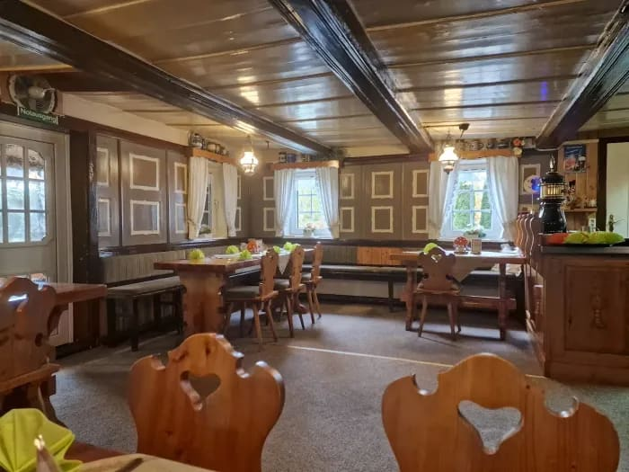
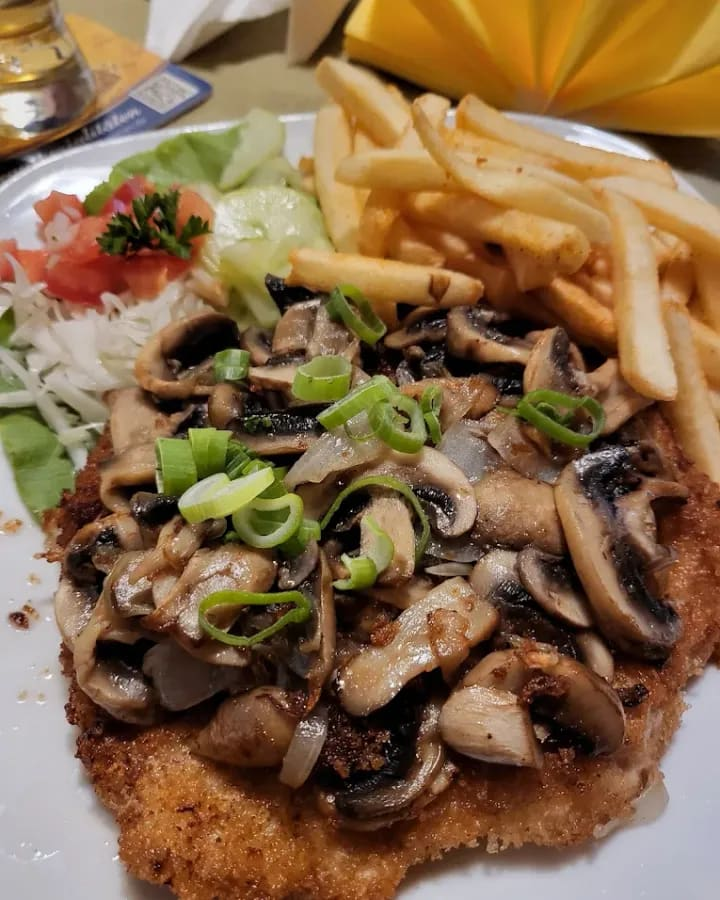
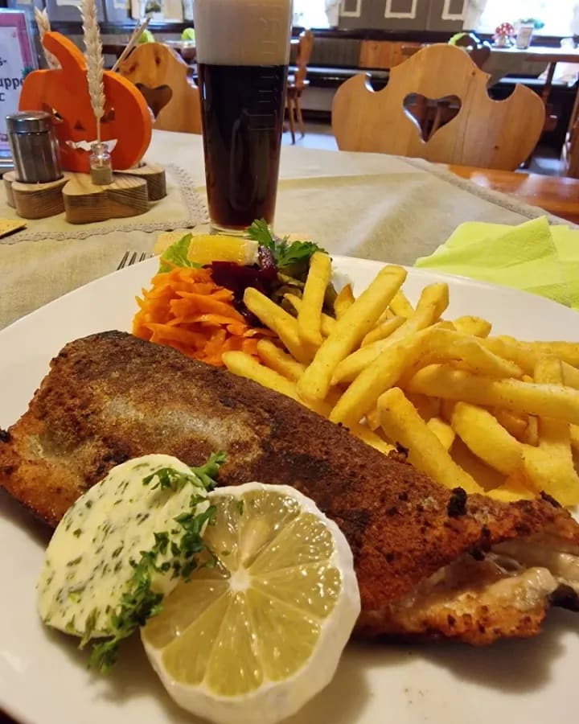
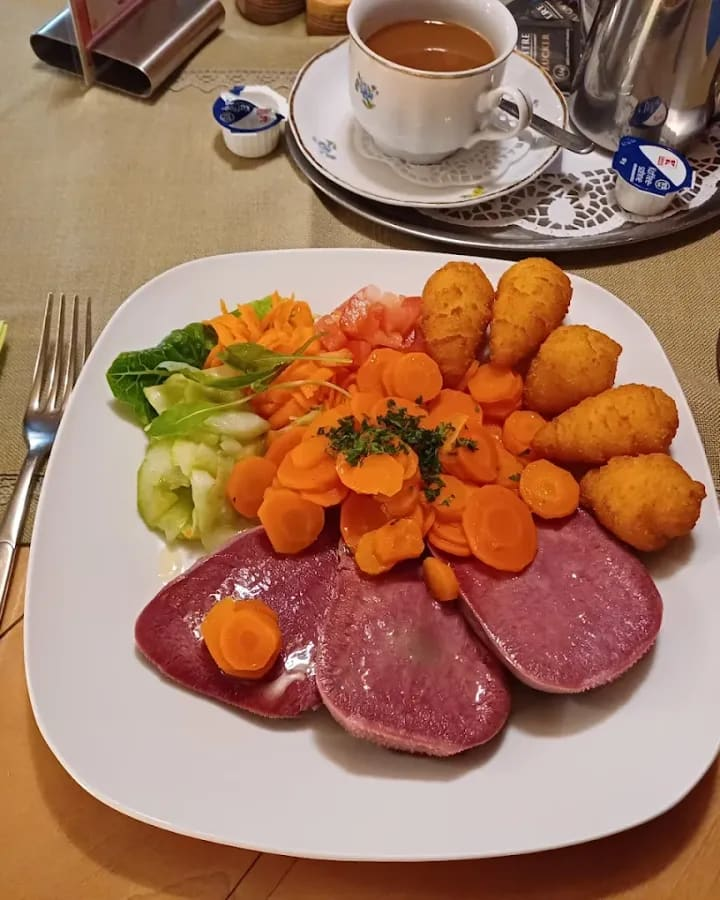
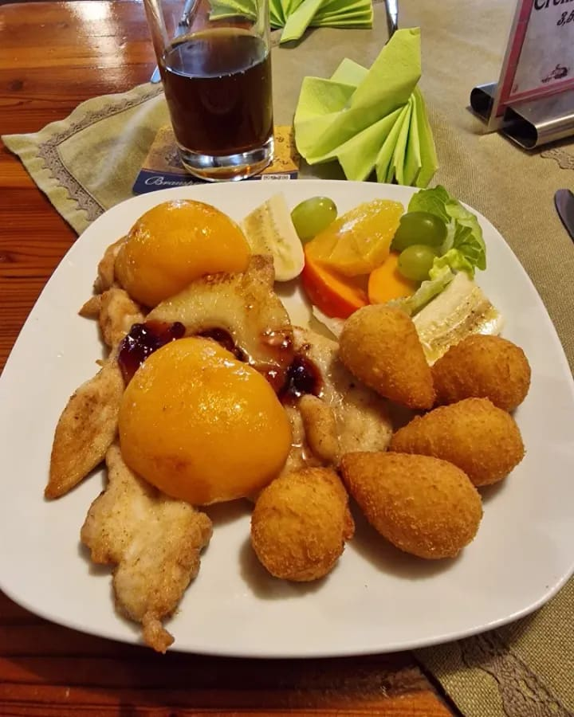
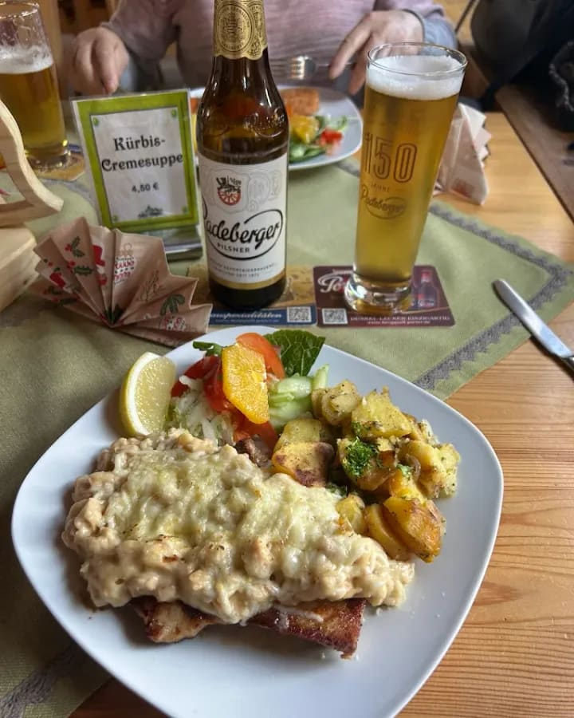
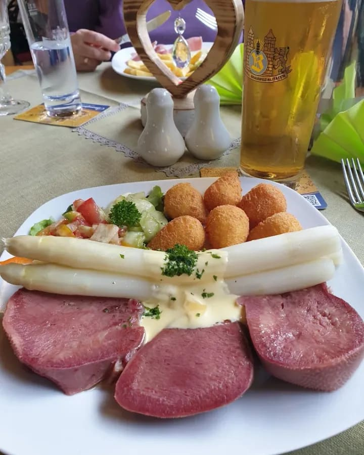
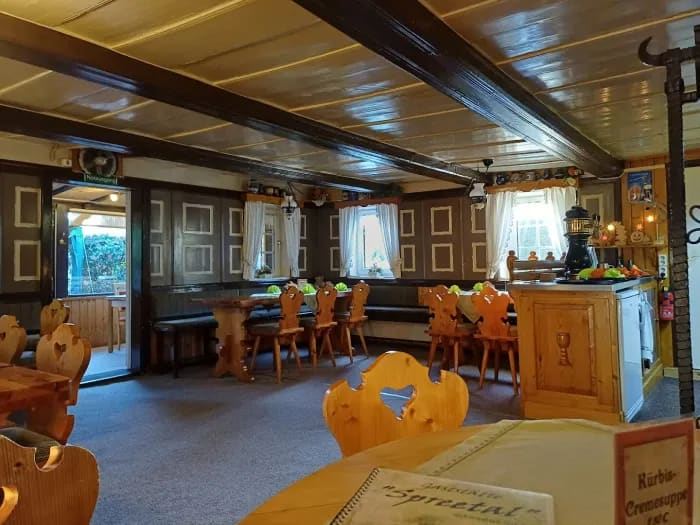
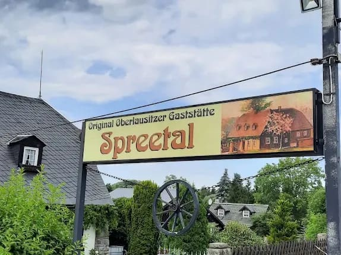

Original Oberlausitzer Gaststätte
Hausmannskost im Umgebindehaus
Deftig, frisch und reichlich: In unserem kleinen Familienbetrieb im Spreetal zwischen Ebersbach und Neugersdorf geht niemand hungrig nach Hause.
4,7 von 5 bei über 230 Google-Rezensionen

- Hausmannskost frisch und regional gekocht
- Große Portionen viele auch als Seniorenportion
- Terrasse bei schönem Wetter draußen sitzen
- Parkplätze kostenlos direkt am Haus
Willkommen im Spreetal
Ein Familienbetrieb mit Herz
Wir sind ein kleiner Familienbetrieb und kochen so, wie man es in der Oberlausitz mag: ehrlich, reichlich und mit Liebe zum Detail. Sonderwünsche erfüllen wir gern.
In unserer Gaststube sitzen Sie unter dunklen Deckenbalken, auf der Eckbank oder den Herzstühlen – gemütlich wie in der guten Stube. Bei schönem Wetter geht es hinaus auf die Terrasse. Kinder bekommen ihre eigene Karte, und auch Ihr Hund ist willkommen.

Aus unserer Küche
Speisekarte
Gutbürgerlich, reichlich und zu fairen Preisen – so, wie es sich für eine Oberlausitzer Gaststätte gehört.
Diese Gerichte gibt es auch als Seniorenportion – 1,50 € günstiger.
Vorspeisen & Suppen
-
Kraftbrühe3,50 €
mit Fleischklößchen und Eierstich
-
Soljanka3,50 €
-
Würzfleisch6,00 €
mit Käse überbacken, im hausgebackenen Brotnäpfchen
-
Riesengarnelen-Cocktail6,00 €
mit Toast
-
Gebackener Camembert6,00 €
vegetarischmit Ananas, Preiselbeeren und Toast
-
Toast Hawaii5,50 €
mit Schinken, Ananas und Käse überbacken
Salate
-
Kleiner Salatteller3,90 €
vegetarischmit Joghurtdressing
-
Großer Salatteller6,50 €
vegetarischmit Joghurtdressing
-
Großer Salatteller mit Hähnchenbrust12,00 €
gebraten, mit Dressing
-
Großer Salatteller mit Riesengarnelen12,00 €
mit Dressing
Alle Salatteller auch mit Schafskäse oder Schinken + 0,50 €
Für unsere kleinen Gäste
-
Pommes frites3,50 €
mit Ketchup oder Mayonnaise
-
Hähnchenbrustfilet5,00 €
mit Pommes frites
-
Schnitzel5,00 €
mit Pommes frites
Hauptgerichte
-
Hausgemachte SülzeS, auch als Seniorenportion9,90 €
mit Remoulade, dazu Bratkartoffeln
-
Forelle13,00 €
gebraten und grätenfrei, mit Kräuterbutter, dazu Pommes frites
-
Lachsfilet14,50 €
mit Möhrengemüse, dazu Salzkartoffeln
-
FleischrolleS, auch als Seniorenportion13,00 €
gefüllt mit Rahmfrischkäse, dazu Tsatsiki und Pommes frites
-
Räubersteak „Karasek“S, auch als Seniorenportion14,00 €
Schweinesteak mit Letscho, dazu Pommes frites – benannt nach dem Oberlausitzer Räuberhauptmann
-
Schweinesteak mit WürzfleischS, auch als Seniorenportion16,00 €
dazu Pommes frites
-
Kasslersteak mit SpiegeleiS, auch als Seniorenportion14,50 €
dazu Bratkartoffeln
-
Gefülltes Schnitzel16,50 €
mit Schinken und Käse, dazu Pommes frites
-
Schnitzel mit Mischpilzen16,00 €
dazu Pommes frites
-
Hamburger SchnitzelS, auch als Seniorenportion14,50 €
dazu Kartoffelsalat
-
Hähnchenbrustfilet mit MöhrengemüseS, auch als Seniorenportion14,00 €
dazu Kroketten
-
Hähnchenbrustfilet mit gebutterten SüdfrüchtenS, auch als Seniorenportion14,00 €
dazu Kroketten
-
Pökelzunge mit MöhrengemüseS, auch als Seniorenportion15,90 €
dazu Kroketten
Nur Bares ist Wahres: Bitte haben Sie Verständnis, dass wir keine EC- oder Kreditkarten annehmen.
Hinweise zu Allergenen erhalten Sie gern bei unserem Personal. Die Getränkekarte bekommen Sie am Tisch.
So kommt es auf den Tisch
Frisch auf den Teller
Kein Foto aus dem Katalog, sondern Teller, wie unsere Gäste sie bekommen haben.
-

Schnitzel mit Mischpilzendazu Pommes frites · 16,00 €
-

Forelle mit Kräuterbuttergebraten und grätenfrei · 13,00 €
-

Pökelzunge mit Möhrengemüsedazu Kroketten · 15,90 €
-

Hähnchenbrust mit Südfrüchtendazu Kroketten · 14,00 €
-

Mit Würzfleisch überbackenhier mit Bratkartoffeln
-

Zunge mit Spargelzur Spargelzeit von der Tafel
Fotos: Gäste der Gaststätte Spreetal
Das sagen unsere Gäste
4,7 Sterne bei über 230 Rezensionen
-
Das Essen ist sehr gut und reichlich. Die Preise sind nicht zu hoch und für das Gebotene wirklich günstig. Ich komme immer wieder gerne.
★★★★★ Google-Rezension
-
Einfach top! Fantastisches Essen, tolles Ambiente und ein sehr freundlicher Service.
★★★★★ Google-Rezension
-
Für sein Geld bekommt man noch richtig gute Portionen.
Google-Rezension

Feiern & Gruppen
Feiern im Spreetal
Geburtstag, Familienfeier oder Vereinsabend: Bei uns finden auch größere Runden Platz. Rufen Sie uns an – gemeinsam besprechen wir, was auf den Tisch kommt.
- Familienfeiern und Geburtstage
- Vereine, Stammtische und Betriebsfeiern
- Wander- und Radlergruppen
- Kinderkarte und Seniorenportionen
- Hunde sind willkommen
Wann wir für Sie da sind
Öffnungszeiten
| Montag | Ruhetag |
|---|---|
| Dienstag | Ruhetag |
| Mittwoch | 17 – 20 Uhr |
| Donnerstag | 17 – 20 Uhr |
| Freitag | 11 – 13 Uhr 17 – 20 Uhr |
| Samstag | 11 – 13:30 Uhr 17 – 20 Uhr |
| Sonntag | 11 – 13:30 Uhr 17 – 20 Uhr |
An Feiertagen und in der Urlaubszeit können die Zeiten abweichen.
So finden Sie uns
Anfahrt

Spreedorfer Straße 30
02730 Ebersbach-Neugersdorf
-
Mit dem AutoKostenlose Parkplätze direkt am Haus.
-
Mit dem BusPlusBus Linie 50 bis zur Haltestelle August-Weise-Siedlung, von dort sind es wenige Gehminuten.
-
Mit dem RadEine gute Einkehr auf Touren rund um die Spreequellen.
Wir freuen uns auf Sie
Tisch reservieren
Bei uns ist oft viel los. Rufen Sie am besten vorher kurz an, dann halten wir Ihnen einen Platz frei.
03586 300159Am besten erreichen Sie uns während der Öffnungszeiten.